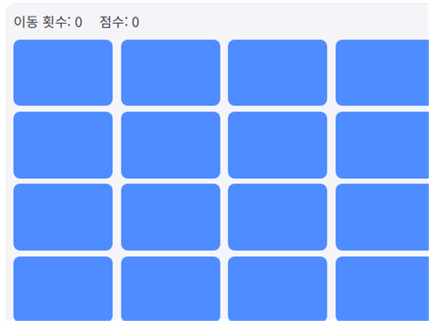

카드 짝맞추기는 4x4로 배열된 16장의 카드를 두 장씩 뒤집어 같은 그림끼리 짝을 맞추는 기억력 게임입니다. 모든 짝을 맞추면 게임이 끝나며, 이동 횟수가 적을수록 점수가 높습니다.
기본 규칙
- 카드 두 장을 차례로 클릭해서 뒤집습니다.
- 같은 그림이면 그대로 열린 채로 남고, 다르면 잠시 후 다시 뒤집힙니다.
- 모든 카드의 짝을 맞추면 클리어이며, 이동 횟수가 적을수록 최종 점수가 높습니다.
이동 횟수 줄이는 팁
1. 첫 라운드에서 위치를 최대한 암기하세요
처음 두 장을 뒤집을 때 짝이 아니더라도 그 위치와 그림을 기억해두면, 이후 다른 카드를 뒤집다가 짝을 발견했을 때 바로 이동해 헛수를 줄일 수 있습니다.
2. 왼쪽 위부터 순서대로 확인하세요
무작위로 여기저기 클릭하기보다 보드를 순서대로(예: 왼쪽 위부터 오른쪽 아래로) 훑으면 전체 배치를 체계적으로 기억하기 쉬워 실수가 줄어듭니다.
직접 플레이해보고 싶다면 여기서 바로 시작할 수 있습니다.